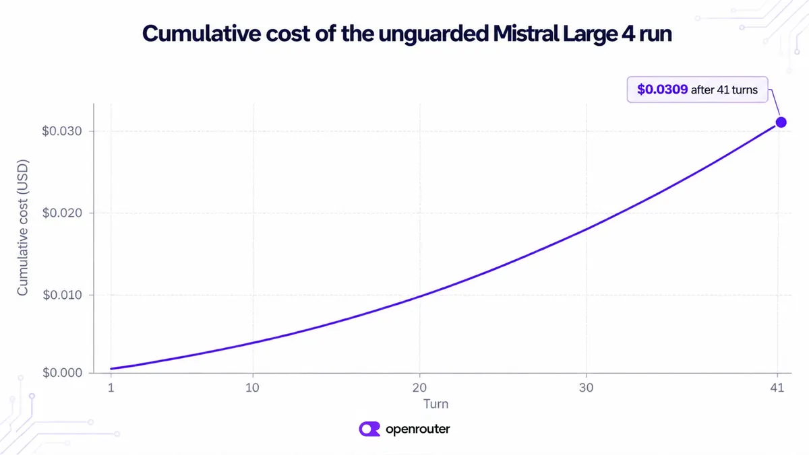

智能代理：四道閘門把無限迴圈擋在第三次重複呼叫
導讀原文：OpenRouter Blog〈How to Stop an AI Agent Stuck in an Infinite Loop〉——教學文，用一個只會逾時的帳務 agent 貫穿四道閘門
迴圈不是模型笨，是迴圈裡沒有東西在數次數：同一個失敗工具、同樣的參數，再試一次永遠看起來合理。四道閘門才擋得住。
本站重繪，非原文圖。原文分「SDK 內三道＋API key 一道」；圖改依作用範圍（跨 session／單次 run／單次呼叫）巢狀排列，原文未給此巢狀順序。
agent 迴圈的預設結束條件只有一個：模型不再要求呼叫工具（除非你另外設了 stopWhen 上限）。工具一直失敗，模型就沒有理由給出這個答案。
錯誤訊息原封不動回到對話，系統指令仍寫著完成任務，於是「再試一次」看起來永遠是下一步。
示範 agent 的指令本身就寫著「工具失敗就重試」「沒拿到總額不要停」——指令照做，迴圈就沒有終點。
原文的重點很直白——除非你加程式碼，迴圈裡沒有任何東西在數嘗試次數。
而且每回合都重送整段對話，包含先前的每一次失敗：示範 run 的 input 從 131 個 token 長到 3,262，單回合成本接近四倍。
（編輯觀點：變貴的是歷史，不是模型；提示層叫它別重試，也擋不住一個一直失敗的工具。）
一個跑整夜的迴圈，原文說可能燒掉數千美元。

更刺眼的是最後一則回答：模型自己說，那 41 次嘗試都卡在逾時。它每一回合都知道，還是照樣再試。
四道閘門的原語，與各自的失效邊界
三道在 agent 內，用 @openrouter/agent 0.11.0 就能開；第四道是 API key 的 credit limit，由 OpenRouter 端強制。
| 閘門 | 原語 | 原文限定語 |
|---|---|---|
| 1 偵測 | doomLoop: true | 預設階梯：streak 到 2 先 observe、3 轉 block、6 才 stop |
| 2 判定 | loopKey | 有些模型微改參數就繞過偵測；loopKey 把參數正規化後再比對 |
| 3 封頂 | stopWhen: [stepCountIs(n), maxCost(x)] | 不論迴圈成因為何都封頂；上限觸發時，模型已經要求的那次仍會執行 |
| 4 額度 | API key 的 credit limit | 放不進額度的請求回 402、limit_source: "openrouter_key_limit" |
→ 可橫向滑動
判定細節值得記：fingerprint 用工具名稱加參數，先正規化，JSON key 順序調換不算新呼叫。
而且模型要先看過上一次的結果才再問，才算一次重複；同一回合連問 5 次只算 1 次。
上限那層留了尾巴：示範 run 是 41 次而非 40，多的那次是封頂生效時模型已排隊的呼叫。
四道閘門預設都不生效：前兩道要自己開 doomLoop 與 loopKey，第三道要自己寫 stopWhen，第四道要自己在 API key 上設額度。
原文給了建議值：自家常態跑 4–6 回合、花 $0.0018–$0.0053，所以留 15 步與 $0.01 的空間；示範裡的 40 步只是為了讓 run 一定會結束。
機制要分清：偵測與封頂是 callModel 的選項，loopKey 掛在工具定義上；hooks 只負責觀測與自訂失敗計數，不是閘門本體。
判成 stop 時，run 直接以 doom_loop 收尾，不會再送出下一次請求。
四道閘門對應四種失敗：重複、微調參數後的重複、跑太久、跑太多錢；單靠一個數字封頂，只保證「停」。
六個模型、各 18 次跑：偵測把 314 次呼叫壓到 64
示範 agent 只有一個工具 fetch_invoice，永遠以帳務服務逾時收場。
同一個 agent、同一句輸入，六個模型各跑三次，開與不開偵測各一輪，每輪 18 次、合計 36 次跑。
（編輯觀點：測試設計把變數壓到只剩「換模型」與「偵測開關」兩個。）
開偵測，六個模型全部在第 3 次相同呼叫被擋下；不開，18 次裡有 4 次一路重試到 40 步上限。
開偵測的 16 次，都在兩次真正的工具呼叫後結束；總呼叫 314 降到 64，花費 $0.29 降到 $0.05。
其中一次 run 的收尾長這樣：2 次真呼叫、$0.0034，verdict 寫著連續 6 回合以相同參數呼叫同一個工具。
但迴圈本身並不穩定：Grok 4.7 同一輸入跑出 41、12、41 次呼叫，一次乾淨的測試不算證明。
（編輯觀點：每個模型只有 3 次樣本，這個量級足以指出方向，不足以當成成功率承諾。）
帶走三件事
先裝計數器，再談模型好壞。沒有東西在數次數，迴圈就會自己長大。
偵測要配 loopKey。參數微改是繞過偵測最便宜的一招。
額度上限是最後一道，不是唯一一道。它在 agent 之外，而且只看總額。
同一主題的其他館藏
導讀為本站編輯內容（AI 摘解自原文與館藏重點，非官方文件）；引述數據出自原文，圖解與小標為編輯整理。本文數據為 OpenRouter 自家量測（自報，無第三方驗證），圖解 A 為本站重繪。內容經對照原文的獨立事實審查後發布。